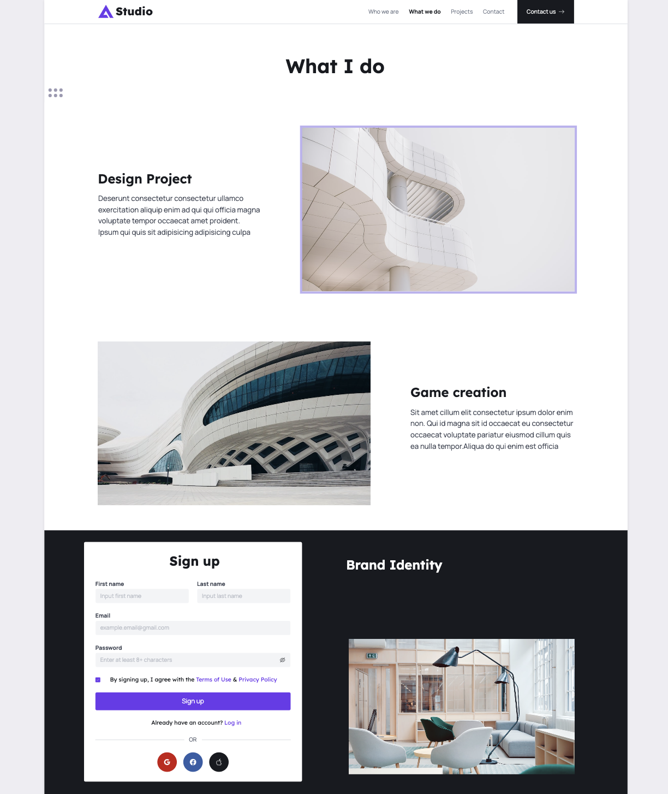

I'm a game designer, and I want to showcase my passion and skills in game development on this website. I plan to integrate various games into my website, including a ball game, a box game, and other simple games created using Java. My primary focus is on highlighting my identity as a game designer and presenting these games to the audience. It's important to ensure that the ideas I come up with will work effectively and are worth the time and effort required to bring them to life.
<As a game designer, my journey involves delving into the world of interactive experiences. To craft a compelling website that resonates with my audience, I've undertaken a comprehensive exploration of various game design and development portfolios. Much like a level designer fine-tunes every detail of a game, I've meticulously examined these portfolios to understand how they engage users. Each portfolio exhibits its unique style, themes, and interaction patterns, serving as a wellspring of inspiration. Notably, I draw inspiration from the work of influential figures like Robin Nyugen, an exceptional UX designer, whose innovative approaches to user experiences have left a lasting impact on my own design philosophy. Through this research, I aim to adapt the best practices and design elements from successful game development portfolios, integrating them into my website to create an immersive and engaging experience for visitors.
In the world of game design, understanding your audience is as critical as crafting the next level of an epic game. My website is tailored for a specific audience: employers who are on the lookout for a skilled and creative game designer. I aim to create a digital presence that appeals to businesses, gaming companies, and studios seeking design-oriented and strategic game managers. These potential employers are not only interested in your ability to create captivating gameplay experiences but also in your capacity to manage projects, understand the business side of gaming, and deliver results that drive success. To cater to this audience, I'll showcase my portfolio, highlighting my game design projects, my problem-solving skills, and my unique approach to creating interactive and immersive game experiences. By doing so, I seek to convey my expertise and commitment to the craft, making it clear that I am a valuable asset to any team looking to push the boundaries of game design.

Just as a game must adapt to different devices and platforms, my website's design must be responsive to ensure it delivers an exceptional experience to all users, whether they're on a smartphone, tablet, or desktop computer. Game design extends beyond the virtual world, and my website is a reflection of this philosophy. It's essential to create a responsive mockup that effectively translates my game-related content and design across various devices. Much like designing gameplay for different platforms, I must ensure that the website remains engaging and functional no matter how it's accessed. I understand that responsive design is not merely about scaling images or text but reimagining the user experience for each screen size and input method. By focusing on responsive design, I will make certain that my website is accessible and enjoyable, just like a well-designed game. In addition to my game design skills, I also bring a strong foundation in business management to the table. Just as in game development, business management in the gaming industry is about strategy, teamwork, and effective execution. It's about understanding market trends, identifying opportunities, and delivering projects on time and within budget. My website not only showcases my game design expertise but also highlights my ability to manage projects, lead teams, and make data-driven decisions. Whether it's creating compelling gameplay experiences or managing the business aspects of game development, I'm dedicated to achieving success and driving innovation. As I progress in this journey, I'll strive to create a responsive mockup that not only showcases my game design and business management skills but also reflects my dedication to delivering a seamless experience for all visitors. Just as in the gaming world, where success requires a combination of creativity and strategy, I aim to create a website that embodies these principles.